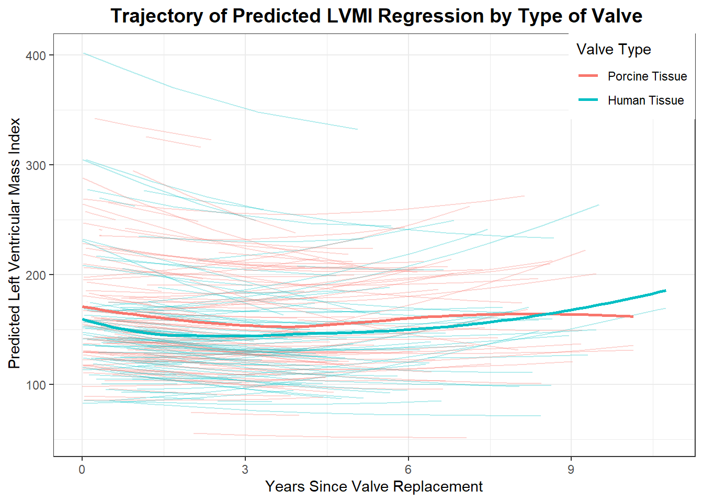
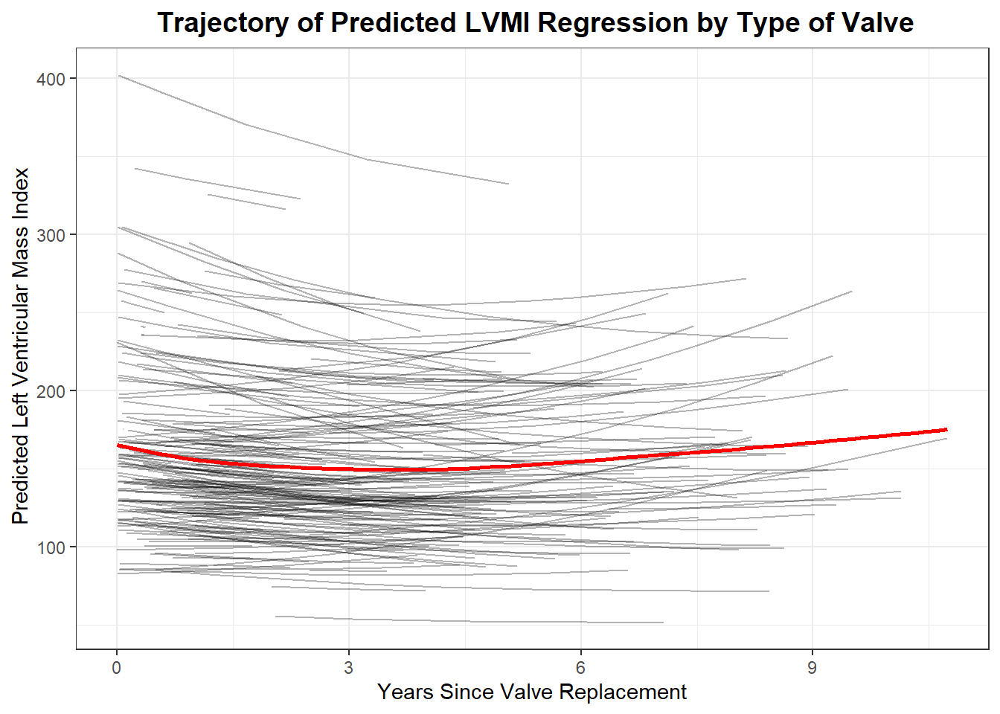
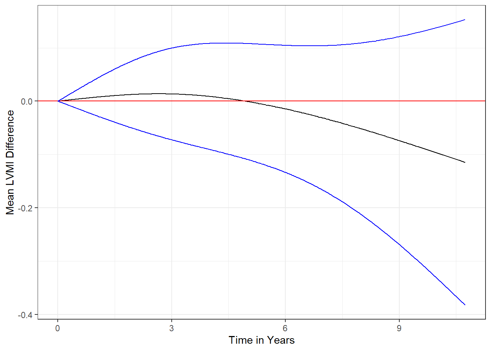

library(tidyverse)
library(nlme)
library(broom)
library(finalfit)
library(gtsummary)
library(lmtest)
library(lme4)
library(clubSandwich)
library(patchwork)
library(splines)
theme_set(theme_bw())DATA ANALYSIS REVISION
heart_df <- read.table("aortic_valve.dat",header = TRUE)df <- heart_df %>%
mutate(
age = age %>% ff_label("Age(years)"),
sex = if_else(sex ==0,"Male","Female") %>%
fct_relevel("Female") %>%
ff_label("Sex"),
redo = if_else(redo ==0,"No","Yes") %>%
fct_relevel("No") %>%
ff_label("Previous Cardiac Surgery"),
emerg = if_else(emerg == 0,"Elective","Emergent") %>%
fct_relevel("Elective") %>%
ff_label("Operative Urgency"),
dm = if_else(dm ==0,"No","Yes") %>%
fct_relevel("No") %>%
ff_label("Preoperative Diabetes"),
type = if_else(type ==1,"Human Tissue","Porcine Tissue") %>%
fct_relevel("Porcine Tissue") %>%
ff_label("Type of Valve"),
lvmi =lvmi %>% ff_label("LVMI"),
futime = futime %>% ff_label("Follow-up Time(years)"),
status = if_else(status == 0,"Censored","Death") %>%
fct_relevel("Censored") %>%
ff_label("Status"),
log_lvmi = log(lvmi)
)NULL MODEL WITH NO VALVE TYPE INCLUDED
model.null <- df %>%
lmer(log_lvmi ~ ns(time,2) + age + I(sex) + I(redo) + I(emerg) + I(dm) +
(time|id),REML = FALSE, data = .)
summary(model.null)Linear mixed model fit by maximum likelihood ['lmerMod']
Formula: log_lvmi ~ ns(time, 2) + age + I(sex) + I(redo) + I(emerg) +
I(dm) + (time | id)
Data: .
AIC BIC logLik deviance df.resid
223.6 282.3 -99.8 199.6 976
Scaled residuals:
Min 1Q Median 3Q Max
-4.6210 -0.5258 -0.0068 0.4702 4.7187
Random effects:
Groups Name Variance Std.Dev. Corr
id (Intercept) 0.102444 0.32007
time 0.001627 0.04033 -0.38
Residual 0.037108 0.19263
Number of obs: 988, groups: id, 256
Fixed effects:
Estimate Std. Error t value
(Intercept) 4.8746263 0.1220721 39.932
ns(time, 2)1 -0.1177107 0.0531716 -2.214
ns(time, 2)2 0.0696832 0.0690823 1.009
age 0.0008286 0.0016805 0.493
I(sex)Male 0.1737831 0.0455515 3.815
I(redo)Yes 0.0318716 0.0688711 0.463
I(emerg)Emergent 0.0202652 0.0655878 0.309
I(dm)Yes -0.1889789 0.0958543 -1.972
Correlation of Fixed Effects:
(Intr) n(,2)1 n(,2)2 age I(sx)M I(rd)Y I(mr)E
ns(time,2)1 -0.162
ns(time,2)2 -0.039 0.474
age -0.940 0.065 0.040
I(sex)Male -0.374 -0.020 -0.007 0.125
I(redo)Yes -0.039 -0.025 -0.022 0.015 -0.078
I(mrg)Emrgn 0.013 0.062 0.025 -0.089 0.025 -0.090
I(dm)Yes -0.011 -0.015 0.002 -0.029 0.022 -0.058 -0.019MODEL WITH VALVE TYPE INCLUDED BUT ASSUMING SAME SLOPE
model_type <- df %>%
lmer(log_lvmi ~ ns(time,2) + age + I(sex) + I(redo) + I(emerg) + I(dm) + I(type) +(time|id),REML = FALSE, data = .)
summary(model_type)Linear mixed model fit by maximum likelihood ['lmerMod']
Formula: log_lvmi ~ ns(time, 2) + age + I(sex) + I(redo) + I(emerg) +
I(dm) + I(type) + (time | id)
Data: .
AIC BIC logLik deviance df.resid
222.8 286.5 -98.4 196.8 975
Scaled residuals:
Min 1Q Median 3Q Max
-4.6145 -0.5247 -0.0137 0.4604 4.7304
Random effects:
Groups Name Variance Std.Dev. Corr
id (Intercept) 0.101568 0.31870
time 0.001643 0.04054 -0.38
Residual 0.037088 0.19258
Number of obs: 988, groups: id, 256
Fixed effects:
Estimate Std. Error t value
(Intercept) 4.9992364 0.1423174 35.127
ns(time, 2)1 -0.1206017 0.0532614 -2.264
ns(time, 2)2 0.0683962 0.0691854 0.989
age -0.0005007 0.0018488 -0.271
I(sex)Male 0.1718417 0.0452879 3.794
I(redo)Yes 0.0550676 0.0698375 0.789
I(emerg)Emergent 0.0144303 0.0653222 0.221
I(dm)Yes -0.1934533 0.0952884 -2.030
I(type)Human Tissue -0.0768065 0.0458680 -1.675
Correlation of Fixed Effects:
(Intr) n(,2)1 n(,2)2 age I(sx)M I(rd)Y I(mr)E I(dm)Y
ns(time,2)1 -0.157
ns(time,2)2 -0.040 0.476
age -0.948 0.073 0.042
I(sex)Male -0.332 -0.019 -0.007 0.123
I(redo)Yes 0.071 -0.031 -0.024 -0.072 -0.082
I(mrg)Emrgn -0.018 0.065 0.026 -0.056 0.026 -0.099
I(dm)Yes -0.024 -0.014 0.002 -0.014 0.023 -0.063 -0.017
I(typ)HmnTs -0.522 0.032 0.011 0.429 0.025 -0.198 0.055 0.029MODEL WITH INTERACTION OF VALVE TYPE WITH TIME
model_interaction <- df %>%
lmer(log_lvmi ~ ns(time,2) + age + I(sex) + I(redo) + I(emerg) + I(dm) + I(type) + I(type):ns(time,2) +(time|id),REML = FALSE, data = .)
summary(model_interaction)Linear mixed model fit by maximum likelihood ['lmerMod']
Formula: log_lvmi ~ ns(time, 2) + age + I(sex) + I(redo) + I(emerg) +
I(dm) + I(type) + I(type):ns(time, 2) + (time | id)
Data: .
AIC BIC logLik deviance df.resid
226.0 299.4 -98.0 196.0 973
Scaled residuals:
Min 1Q Median 3Q Max
-4.5994 -0.5263 -0.0069 0.4614 4.7380
Random effects:
Groups Name Variance Std.Dev. Corr
id (Intercept) 0.101906 0.31923
time 0.001706 0.04131 -0.39
Residual 0.036892 0.19207
Number of obs: 988, groups: id, 256
Fixed effects:
Estimate Std. Error t value
(Intercept) 5.0025129 0.1432140 34.930
ns(time, 2)1 -0.1076071 0.0743096 -1.448
ns(time, 2)2 0.1282033 0.0966603 1.326
age -0.0005042 0.0018499 -0.273
I(sex)Male 0.1713477 0.0453187 3.781
I(redo)Yes 0.0565449 0.0699202 0.809
I(emerg)Emergent 0.0133837 0.0653505 0.205
I(dm)Yes -0.1945720 0.0953603 -2.040
I(type)Human Tissue -0.0815988 0.0545230 -1.497
ns(time, 2)1:I(type)Human Tissue -0.0291270 0.1068183 -0.273
ns(time, 2)2:I(type)Human Tissue -0.1269885 0.1392295 -0.912
Correlation of Fixed Effects:
(Intr) n(,2)1 n(,2)2 age I(sx)M I(rd)Y I(mr)E I(dm)Y I(t)HT
ns(time,2)1 -0.177
ns(time,2)2 -0.027 0.475
age -0.944 0.061 0.032
I(sex)Male -0.329 -0.028 -0.017 0.123
I(redo)Yes 0.069 -0.007 0.001 -0.071 -0.082
I(mrg)Emrgn -0.018 0.041 0.008 -0.056 0.026 -0.099
I(dm)Yes -0.022 -0.024 -0.007 -0.014 0.024 -0.064 -0.017
I(typ)HmnTs -0.495 0.354 0.016 0.368 0.014 -0.160 0.046 0.015
n(,2)1:I()T 0.093 -0.692 -0.329 -0.013 0.020 -0.023 0.008 0.021 -0.482
n(,2)2:I()T -0.001 -0.328 -0.694 -0.003 0.018 -0.026 0.015 0.013 -0.018
n(,2)1T
ns(time,2)1
ns(time,2)2
age
I(sex)Male
I(redo)Yes
I(mrg)Emrgn
I(dm)Yes
I(typ)HmnTs
n(,2)1:I()T
n(,2)2:I()T 0.480
optimizer (nloptwrap) convergence code: 0 (OK)
Model failed to converge with max|grad| = 0.00301617 (tol = 0.002, component 1)LR TEST OF NULL MODEL AND MODEL WITH VALVE TYPE BUT ASSUMING SAME SLOPE
lrtest(model.null,model_type)| #Df | LogLik | Df | Chisq | Pr(>Chisq) |
|---|---|---|---|---|
| 12 | -99.79917 | NA | NA | NA |
| 13 | -98.40883 | 1 | 2.780681 | 0.0954076 |
LR TEST OF NULL MODEL AND INTERACTION MODEL
lrtest(model.null,model_interaction)| #Df | LogLik | Df | Chisq | Pr(>Chisq) |
|---|---|---|---|---|
| 12 | -99.79917 | NA | NA | NA |
| 15 | -97.98680 | 3 | 3.624731 | 0.3049416 |
LRTEST OF SAME SLOPE MODEL AND INTERACTION TERM MODEL
lrtest(model_type,model_interaction)| #Df | LogLik | Df | Chisq | Pr(>Chisq) |
|---|---|---|---|---|
| 13 | -98.40883 | NA | NA | NA |
| 15 | -97.98680 | 2 | 0.8440498 | 0.6557177 |
GETTING PREDICTIONS FROM NULL MODEL
preds.null <- predict(model.null)
df$preds = exp(preds.null)
lvmi_summary_type <- df %>%
group_by(type,time) %>%
summarise(mean_lvmi = mean(lvmi),
mean_pred_lvmi = mean(preds)) SPHAGETTI PLOT OF PREDICTED TRAJECTORIES
ggplot()+
geom_line(data = df,aes(group = id,x =time, y= preds,color = type),alpha = 0.3)+
geom_smooth(data = lvmi_summary_type,aes( group = type,x = time, y = mean_pred_lvmi,color = type),
se = FALSE)+
labs(x ="Years Since Valve Replacement",
y = " Predicted Left Ventricular Mass Index",
title = " Trajectory of Predicted LVMI Regression by Type of Valve",
color = "Valve Type")+
theme(legend.position = c(1,1),legend.justification = c(1,1),
plot.title = element_text(hjust = 0.5, size = 14, fac="bold"))
SPHAGETTI PLOT OF OBSERVED VS PREDICTED TRAJECTORIES
df |>
ggplot()+
geom_line(aes(group = id,x =time, y= lvmi,color = type),alpha = 0.2)+
geom_smooth(data = lvmi_summary_type,aes(group = type, x= time, y = mean_lvmi,color = type),se = FALSE)+
geom_smooth(data = lvmi_summary_type,aes(group= type, x = time, y = mean_pred_lvmi,color = type),se = FALSE,linetype = "dashed")+
labs(x ="Years Since Valve Replacement",
y = "Left Ventricular Mass Index",
title ="LVMI Regression by Type of Valve: Observed vs Predicted Trajectory",
color = "Valve Type",
caption = "Dashed lines: predicted")+
theme(legend.position = c(1,1),legend.justification = c(1,1),
plot.title = element_text(hjust = 0.5, size = 14, fac="bold"))
spline_terms <- model.matrix(model_interaction)
boundary_knots <- attr(ns(df$time, df = 2), "Boundary.knots")
boundary_knots[1] 0.00 10.74internal_knots <- attr(ns(df$time, df = 2), "knots")
internal_knots[1] 2.7055A <- ns(df$time, knots = internal_knots, Boundary.knots = boundary_knots)
A <- as.matrix(A)
b=matrix(summary(model_interaction)$coefficients[10:11,1],ncol=1)
var_b=summary(model_interaction)$vcov[10:11,10:11]
var_b2 x 2 Matrix of class "dsyMatrix"
ns(time, 2)1:I(type)Human Tissue
ns(time, 2)1:I(type)Human Tissue 0.011410156
ns(time, 2)2:I(type)Human Tissue 0.007145499
ns(time, 2)2:I(type)Human Tissue
ns(time, 2)1:I(type)Human Tissue 0.007145499
ns(time, 2)2:I(type)Human Tissue 0.019384863fit=A %*% bvar_fit_diag <- numeric(nrow(A))
for (i in 1:nrow(A)) {
var_fit_diag[i] <- A[i, ] %*% var_b %*% t(A[i, , drop = FALSE])
}
se_fit <- sqrt(var_fit_diag)
result <- data.frame(
time = df$time,
fit = fit,
se_fit = se_fit,
ci_l = fit - 2 * se_fit,
ci_u = fit + 2 * se_fit
)ggplot(data=result,aes(x=time, y=fit)) +
geom_line() +
geom_abline(intercept=0,slope=0,col="red") +
geom_line(aes(x=time,y=ci_l),col="blue") +
geom_line(aes(x=time,y=ci_u),col="blue")+
labs(x = "Time in Years",
y = "Mean LVMI Difference")